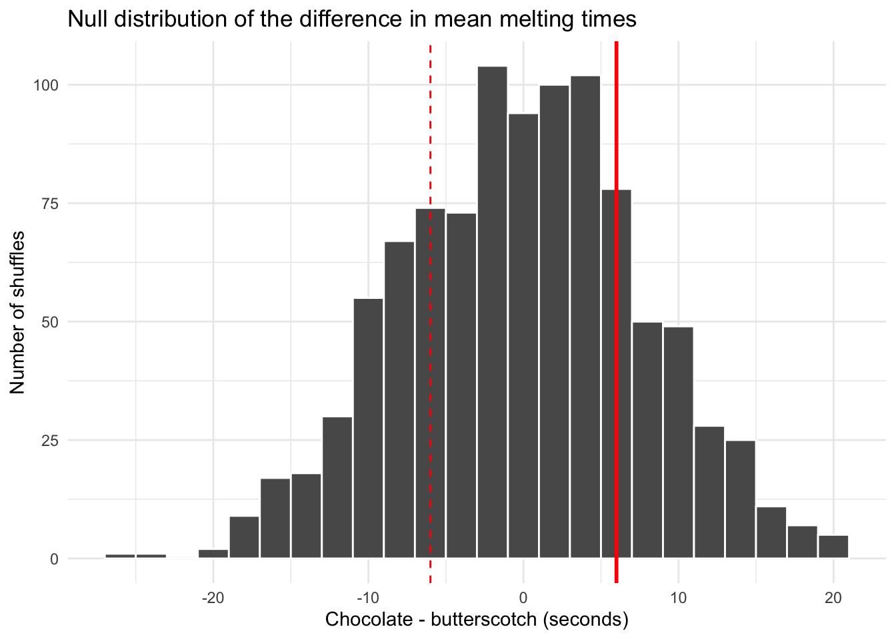

A hypothesis test asks one question: could chance alone explain the difference I see? To answer it, I build a world where the null hypothesis is true, see what differences show up there, and compare my real result to them.
Vocabulary
Term
Meaning
Melting example
Null hypothesis \(H_0\)
“Nothing is going on”: no difference, no relationship
\(\mu_C - \mu_B = 0\): chip type doesn’t affect melting time
Alternative \(H_A\)
What I’m looking for evidence of
\(\mu_C - \mu_B \neq 0\): the chips melt at different speeds
Test statistic
One number that summarizes the data for the question
Difference in sample means, \(\bar{x}_C - \bar{x}_B\)
Null distribution
Test statistics I’d get if \(H_0\) were true, made by shuffling
1,000 shuffled differences in means
p-value
How often the null distribution is at least as extreme as my observed statistic
Share of shuffles at least 6 seconds from 0 (either way)
Significance level \(\alpha\)
The cutoff I pick before looking: reject \(H_0\) if p-value \(\le \alpha\)
\(\alpha = 0.05\)
One-sided\(H_A\) (\(>\) or \(<\)): only one direction counts as evidence. Two-sided (\(\neq\)): both directions count.
!! Pick the direction before seeing the data. Choosing it after makes false positives more likely.
Why Shuffling Works
From the reading (the Kristen Gilbert case): 40 deaths in 257 shifts when Gilbert worked vs. 34 deaths in 1,384 shifts when she didn’t, a difference in proportions of \(0.155 - 0.024 = 0.131\).
If \(H_0\) is true, the death outcome has nothing to do with who was working, so shuffling the outcomes across shifts gives a dataset that could just as easily have happened
Each shuffle breaks any real link, so the shuffled differences are centered at 0. They aren’t exactly 0 every time because of random variation.
The largest of 500 shuffled differences was about 0.06. The real 0.131 was more than twice that, so chance is a very unlikely explanation (tiny p-value).
!! This was an observational study. A tiny p-value shows an association, not that Gilbert caused the deaths. Shift type or patient risk could be confounders (see Study Design). In the melting experiment below, chip type was randomly assigned, so a significant result there would support a causal conclusion.
Worked Example: Chocolate vs. Butterscotch
Question: Do chocolate chips and butterscotch chips take different amounts of time to melt in the mouth? (26 students, each randomly assigned one chip type, times in seconds.)
Pseudocode:
Find the observed difference in means (chocolate − butterscotch)
Shuffle the times between the two groups many times, recording the difference each time (null distribution)
Plot the null distribution with the observed difference marked
p-value = share of shuffled differences at least as far from 0 as the observed one
Compare to \(\alpha = 0.05\) and write the conclusion in context
# A tibble: 2 × 3
Chip n avg_melt_time
<chr> <int> <dbl>
1 Butterscotch 13 72.5
2 Chocolate 13 78.5
Step 1: the observed statistic. infer computes it with the same pipeline as the null distribution, minus the shuffling:
obs_diff <- melting |>specify(response = Melting_Time, explanatory = Chip) |>calculate(stat ="diff in means", order =c("Chocolate", "Butterscotch"))obs_diff
Response: Melting_Time (numeric)
Explanatory: Chip (factor)
# A tibble: 1 × 1
stat
<dbl>
1 6
!! order = c("Chocolate", "Butterscotch") means chocolate minus butterscotch. Order changes the sign, so state it.
Step 2: the null distribution.
set.seed(200) # same shuffles every rendernull_dist <- melting |>specify(response = Melting_Time, explanatory = Chip) |># outcome, then grouphypothesize(null ="independence") |># H0: chip type doesn't mattergenerate(reps =1000, type ="permute") |># shuffle 1000 timescalculate(stat ="diff in means", order =c("Chocolate", "Butterscotch"))
infer verb
What it does
specify()
Names the response and explanatory variables (response ~ explanatory also works)
hypothesize()
States \(H_0\). "independence" = the two variables are unrelated
generate()
Makes the fake datasets. type = "permute" shuffles; reps is how many
calculate()
Computes the test statistic for each fake dataset
visualize() / get_p_value()
Shortcuts for the plot and the p-value
Step 3: where does the real result fall?
ggplot(null_dist, aes(x = stat)) +geom_histogram(binwidth =2, color ="white") +geom_vline(xintercept = obs_diff$stat, color ="red", linewidth =1) +geom_vline(xintercept =-obs_diff$stat, color ="red", linetype ="dashed") +labs(title ="Null distribution of the difference in mean melting times",x ="Chocolate - butterscotch (seconds)",y ="Number of shuffles" ) +theme_minimal()

The dashed line is the mirror image, because a two-sided test counts differences of 6 seconds in either direction.
Step 4: the p-value.
# by hand: TRUE/FALSE for each shuffle, and the mean of TRUE/FALSE is the share of TRUEsp_val <-mean(abs(null_dist$stat) >=abs(obs_diff$stat))p_val
[1] 0.456
# with infernull_dist |>get_p_value(obs_stat = obs_diff, direction ="two-sided")
# A tibble: 1 × 1
p_value
<dbl>
1 0.434
The two p-values differ a little. By hand counts shuffles in both tails. get_p_value() takes the smaller tail and doubles it. With a symmetric null distribution they’re close, and either one is fine. Just say which one I used.
Answer: Chocolate took 6 seconds longer on average in our class. If chip type made no difference, a gap at least this big (either way) would show up in about 46% of random assignments. Since 0.46 > 0.05, we fail to reject\(H_0\): we don’t have convincing evidence that the chips melt at different speeds.
!! “Fail to reject” is not “the chips melt the same.” With 13 people per group and times from 53 to 131 seconds, a small real difference could easily go undetected (low power, below).
Reading a p-value
Correct?
Statement (p = 0.002)
Yes
Assuming \(H_0\) is true, there’s a 0.2% chance of a statistic at least this extreme
No
There’s a 0.2% chance \(H_0\) is true
No
There’s a 0.2% chance the data happened by chance
No
There’s a 99.8% chance \(H_A\) is true
Small p-value → the data would be surprising under \(H_0\) → evidence against \(H_0\)
Large p-value → the data look like what chance produces → no convincing evidence (not proof of \(H_0\))
!! If no shuffle was as extreme as the observed statistic, the p-value isn’t 0. Report it as less than 1 / reps (e.g. < 0.001 with 1,000 reps).
!! Statistically significant doesn’t mean practically important. With a huge sample, a 1-second difference in melting time could be “significant” and still not matter to anyone eating chips.
Physical vs. computational simulation
In class we first shuffled index cards by hand (5 shuffles per group), then let infer do it.
More reps → a smoother null distribution and a more precise p-value
!! More reps does not increase the sample size. The observed difference stays the same, and so does the amount of real information. Only collecting more data does that.
Keep the original group sizes (13 and 13) when shuffling, so each fake dataset looks like one the experiment could have produced
When Tests Are Wrong
\(H_0\) is actually true
\(H_A\) is actually true
Reject \(H_0\)
Type I error (false positive). Probability = \(\alpha\)
Correct. Probability = power
Fail to reject \(H_0\)
Correct
Type II error (false negative). Probability = \(\beta\)
Lower \(\alpha\) (0.05 → 0.01): fewer false positives, but more false negatives
Choose \(\alpha\) by asking which mistake costs more:
False positive is worse (approving a drug that doesn’t work, convicting an innocent person) → smaller \(\alpha\) like 0.01
Missing a real effect is worse (early screening that gets followed up anyway) → larger \(\alpha\) like 0.10
Power is how likely the study is to detect a real effect. It depends on how big that effect is, so it’s always “power to detect a difference of this size.”
Change
Effect on power
Why
Larger sample size
Increases
Group means are more precise, so the null distribution is narrower
Larger true difference
Increases
The observed statistic lands farther out in the tail
Less variability
Increases
Narrower null distribution. E.g. same-size chips, a clear “fully melted” rule, or each person melting both chips (paired design)
Higher \(\alpha\)
Increases
Easier to reject, but more Type I errors
Takeaway:
\(\alpha\): how willing am I to risk a false positive?